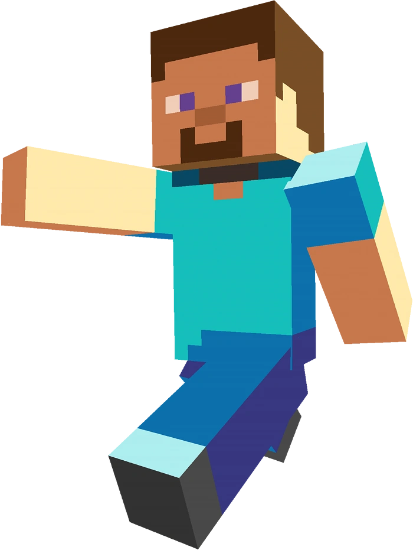
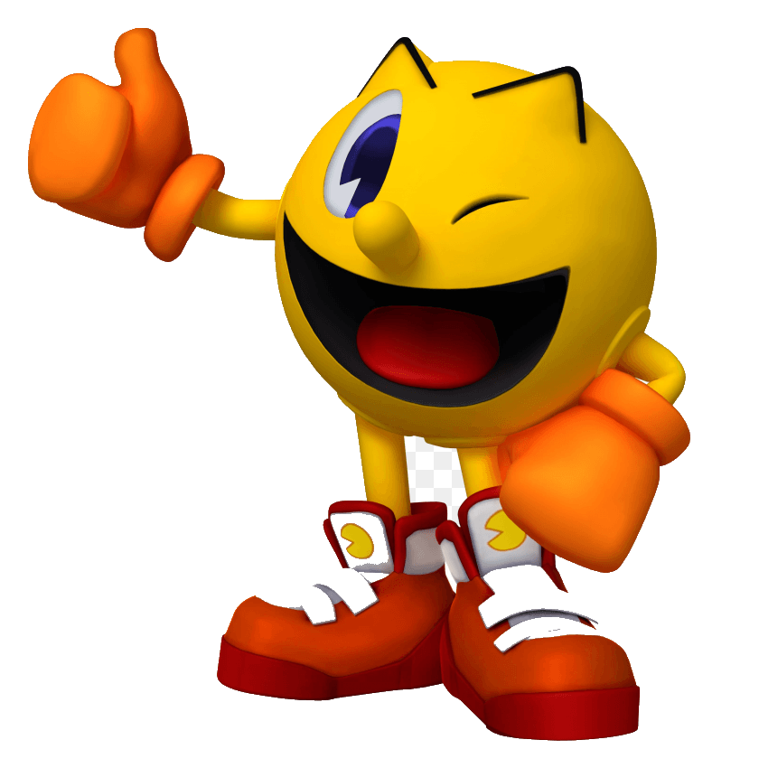
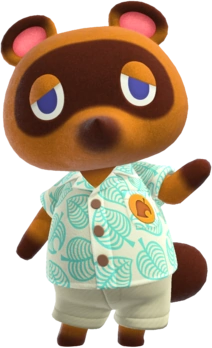
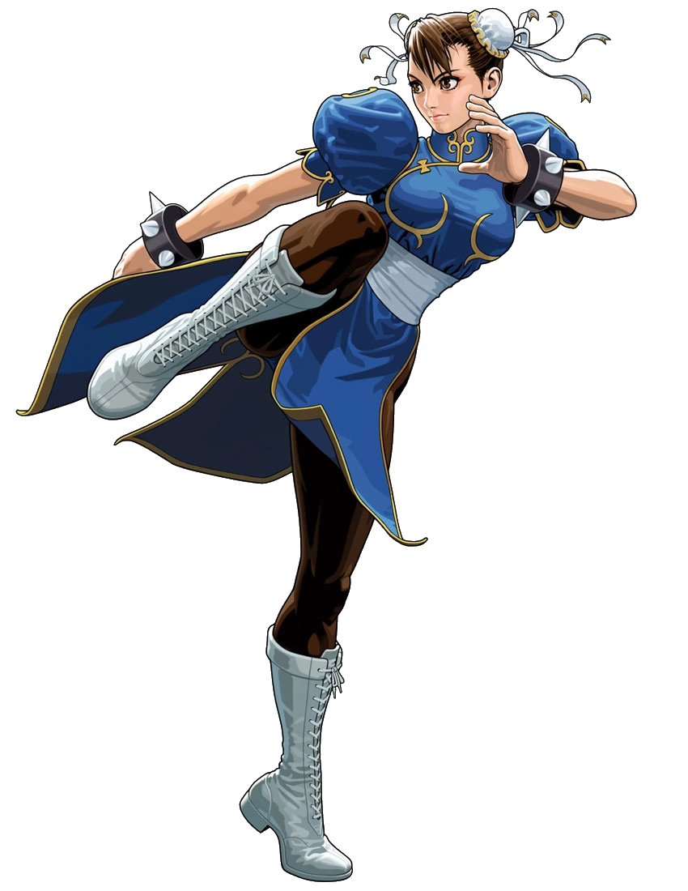

Video Game Character Tier List
1. Steve
Popularity- 39
From the popular game minecraft, is the player charcter and the most iconic skin avalible. He also has a counterpart, Alex, who is not as popular althoguh most likely would be voted as high as him.

2. GLaDOS
Popularity- 20
Antagonist from the game series Portal One and Portal Two who is superintelligent computer.

3. Pikachu
Popularity- 13
From the Pokèmon Franchise, is the most popular and recognizable Pokèmon and is most likely one of the frist pokemon be recalled. It is the electric mouse pokemon and is fittingly a solo electric type in the game with a evolution under it, Pichu, and an evolved form, Richu.

4. Master Cheif
Popularity- 13
From the Halo games, he is the proagnist and his true name is Master Chief Petty Officer John-117. The games revolve around Spartan Locke's hunt for the rogue Master Chief, who is trying to find Cortana.

5. Mario
Popularity- 5
From the game sharing the same name, diversified into multiple games of varied types althoguh is most popular for his platforming games. Although he shares a stage with Luigi, Bowser, and Princess Peach is easily the most iconic.

6. Pacman
Popularity- 4
From the retro game, Packman, and has been seen in many forms thoughout the industry.Since its release in 1980 it has appeared in countless media, games, and formats and is truly one of the defining video games.

7. Tom Nook
Popularity- 4
A character from Nintendo Entertainment, Animal Crossing works on the islanders shop.

8. Sage
Popularity- 4
A support character in the game VALORANT who can bring her team mates back with her ultinate, Resurrection

9. Link
Popularity- 3
Is the main protagonist who is chosen by the goddess Hylia from the Zelda games published by Nintendo.

10. Chun-Li
Popularity- 0
Is a undercover Interpol who was orginally indroduce in Street Fighter II: The World Warrior in 1991. She is the first female playable character from Capcom.
